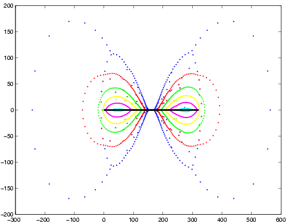

Eigensolve is a program that approximates the roots of a univariate
polynomial. The algorithm is described in the paper An
iterated eigenvalue algorithm for approximating the roots of univariate
polynomials (an earlier
version appeared in ISSAC 2001).
 This image shows the iterations of the algorithm on the Wilkinson polynomial of degree 320. The initial iteration is in blue, followed by red, green, yellow, magenta, and cyan. The roots are the integers from 1 to 320, i.e. the black line in the center of the image. Each iteration is computed using a floating-point eigenvalue computation. The first eigenvalue computation uses the ordinary Sylvester companion matrix. Subsequent iterations use a generalized companion matrix constructed using the values of the polynomial at the previous iterate. This computation required 7 eigenvalue computations and took about 87 seconds (on a 250 Mhz SGI R10000, with roots reported to 15 decimal digits). Here is a description of the algorithm and other examples of iterations.
Eigensolve accepts polynomials in the same file format as the program MPSolve, written by Dario Bini and Giuseppe Fiorentini (MPSolve tar file ). For many polynomials, especially ill-conditioned polynomials of high degree, eigensolve is much faster than MPSolve. For example, MPSolve takes 2138 seconds on the same example. More details on the performance of eigensolve, including a comparison with MPSolve, are available.
The source for eigensolve is available for download (limited use noncommercial
license) from the Lucent
Technologies Research Software Distribution Site . Browse
through the list of packages to find eigensolve, then follow the directions.